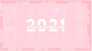
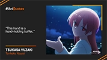
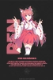
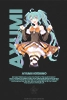

The different design side quests I explored in my (little) spare time
Skills developed
Graphic Design, Motion Design
Project Type
Passion project
Tools
Figma, After Effects, Photoshop, Illustrator
A Fanmade Character Introduction Motion Graphics of KAFU (可不) from Kamitsubaki Studios

Motion Graphic created for the SFU Anime Club's Clubs day in 2020
Social Media Graphic Created for The Collaboration of the Anime Movement+ and AniToons+ Facebook page

Social Media Graphic Template created for the Anime Movement+ Facebook page

Ren Graphic Poster for SFU Anime's "SADtober" event

Ayumi Graphic Poster for SFU Anime's "SADtober" event